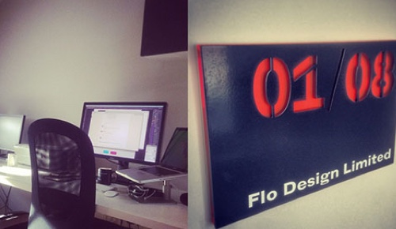

New site, New Office , New Year
OK so I know it's March and that's a bit late for a new year post but hey I'm going with it OK? Its been a bit of a whirlwind here at Flo Design since the start of the year. First we moved into our swanky new office situated in the great Tower Works...
News